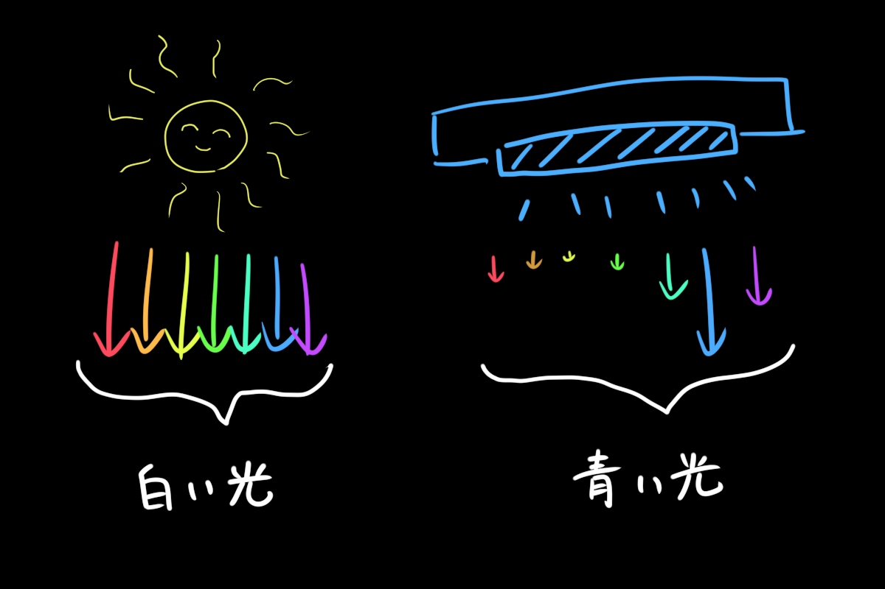
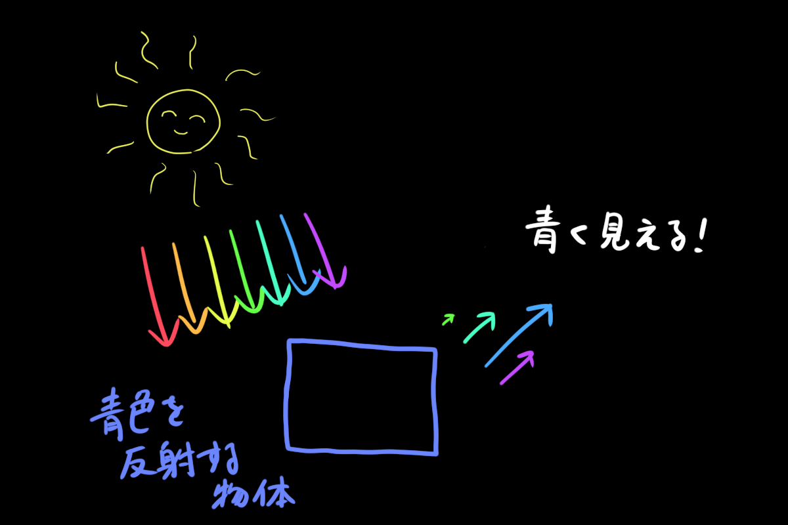
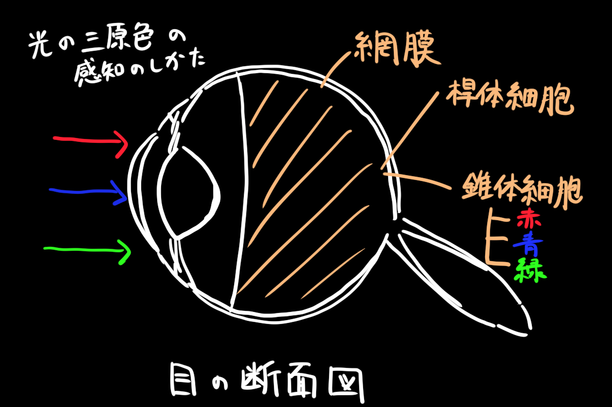
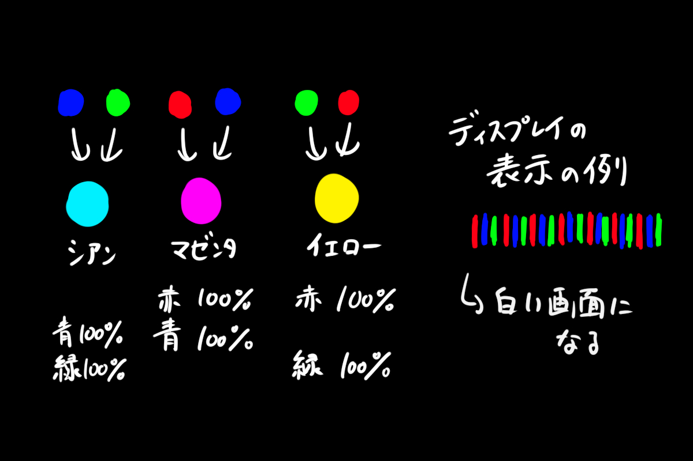
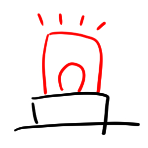
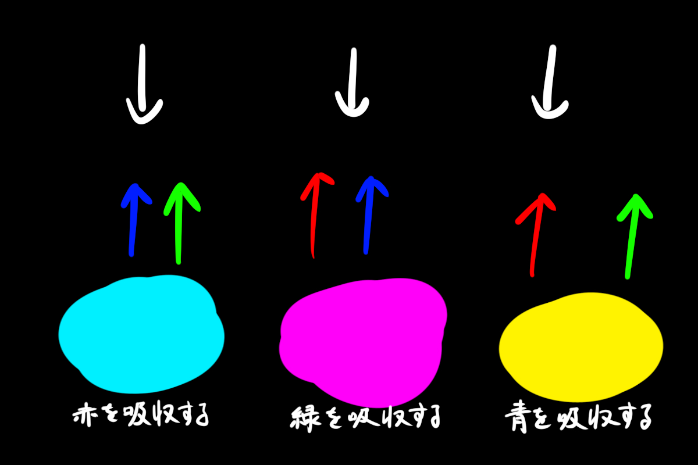
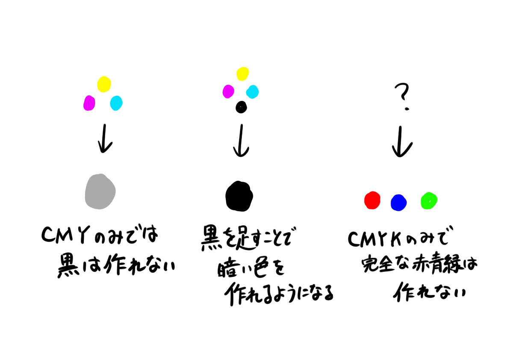

こんにちはSBです。
今年はコロナで1回生などとも接する機会が少なく、さみしい限りです。というわけで今回は1回生にもそれ以上の人にも知っておいてほしい初歩的な内容である、色の基礎の発色方法について書きたいと思います。
・目次
・まとめ
・参考文献
色は光が集まったものです。具体的には可視光線の波長と強弱によって色は決まります。
例として、太陽光のように白い光はすべての波長で強度が高く、ブルーライトのような青い光は青の波長が特に強度が高いという状態です。
では光を発しない物体についてはどうでしょうか。物体は色を発しないのですが、色を反射させる性質があります。この色の反射は物体ごとにどの波長をどの程度反射するのかが異なり、これによって物体の色が決まるのです。
光の三原色が赤青緑の3色であるのはご存じだと思いますが、赤青緑の3色が色の三原色と呼ばれるのは目の構造に由来があります。目の奥にある網膜には、光の強さを感じ取る桿体細胞と、色を感じ取る錐体細胞があり、錐体細胞には赤色、青色、緑色の色を感じ取る3つの細胞が存在します。この錐体細胞を通して私たちは色を知覚することができるのです。
光においては、光の三原色の足し算によって色を作ることができます。例としては真っ黒な背景に対して赤色と青色を足すとマゼンタ、青色と緑を混ぜるとシアン、緑色と赤色を混ぜるとイエローといった具合です。これらの例はそれぞれの色がどれも同じ割合の場合のものですが、これらの割合を変えることによりさらに多くの色を作ることができます。このように色を足すことで色を作ることを加法混色と呼びます。
加法混色が使われている例として、身近なものではディスプレイがあげられます。光の三原色は光の混色方法なので発光体と相性が良いのです。
余談ですが夜景の写真を青色だけめっちゃ上げるとよくツイッターでバズってる感じになります（もちろんもとの写真の良さも必要ですが）。
問題『"光の"三原色と言えば赤青緑の3色ですが、"色の"/』
ピンポン！正解はシアン・マゼンタ・イエローの3色です。
光の三原色では光についてを主に考えてきましたが、色の三原色では物体の色の吸収について考えます。
色の三原色では絵具で考えてみるとわかりやすいです。赤青緑が100％含まれている光を真っ白な紙に当てたとき、シアン・マゼンタ・イエローのそれぞれの色が跳ね返ってくるにはどうすればよいでしょうか。問題を言い換えると、赤青緑が100％含まれている光から「青と緑」、「赤と青」、または「緑と赤」のみがそれぞれ跳ね返ってくるようにするにはどうすればよいでしょうか。
正解は緑色のみを吸収する、赤色のみを吸収する、青色のみを吸収するの3つです。つまり、シアン・マゼンタ・イエローからなる色の三原色は、光の三原色のうちの一つのみを吸収するという特性があるのです。このように色の三原色においては色を引き算で考えることができます。このように白色から色を引くことで色を作ることを減法混色と呼びます。
この減法混色がかなりの曲者で、実際に色を作ろうとしてみるとその使いにくさが分かります。初めに減法混色で黒を作るパターンについて考えてみましょう。今までの説明だとシアン・マゼンタ・イエローを重ねることによってすべての色を吸収して黒になると想像できますが、実際にはできません。キャンパス上をシアン・マゼンタ・イエローで埋め尽くした場合、キャンパス上には「赤と青」が跳ね返ってくるシアンと、「赤と青」が跳ね返ってくるマゼンタ、「緑と赤」が跳ね返ってくるイエローがそれぞれ1/3を占めることになります。その結果、赤青緑の光のそれぞれ67％が跳ね返ってくることになり、その結果明るい灰色が出来上がります。このため、実際の印刷物などではシアン・マゼンタ・イエローに黒色を加えたCMYKカラーモデルが使われています。CMYKのCMYはそれぞれシアン・マゼンタ・イエローの頭文字ですが、KはKey Plateの頭文字です。黒の頭文字ではありません。
黒色を追加することにより暗い色を作ることができるようになりましたが、それでも色の三原色+黒色では発色することができない色が存在します。赤青緑といった極色です。よく絵描きがディスプレイ上で表現した色と実際に印刷されたもので色が違うと嘆いているのはこれが原因です。
今回は色の基本である加法混色と減法混色について紹介しました。特にマルチ班の人でこれをしっていなくて印刷時に困っている人が多い印象だったので色の選び方の参考になるとうれしいです。
明日の記事は鉄鉱石君です。楽しみですね。